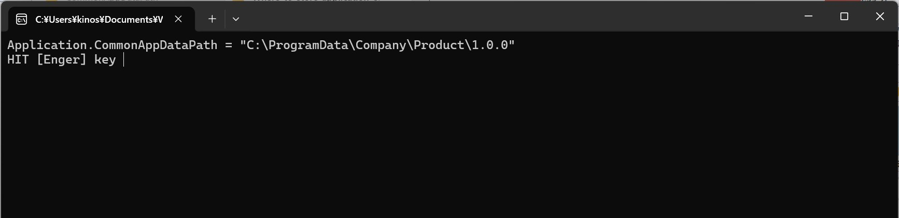

.NET アプリケーションでその設定情報を保存する際の主要な格納方法として、「レジストリ」「XMLファイル」「INIファイル」「独自ファイル」の４種類を利用できる。更にその保存場所によりファイル（XMLファイル、INIファイル、独自ファイル）とレジストリの２種類に分類できる。
さて、具体的にどのパス（ディレクトリまたはレジストリ・キー）に設定情報を保存すればよいのだろうか。
本稿ではこの設定情報を格納する先のパスを決定する方法について記載する。
.NET では、このようなパス決定機能が基本機能として提供されている。具体的には、次の表にある Application クラス (System.Windows.Forms 名前空間) のプロパティとして提供されており、これを使用することで適切な場所へ情報を保存することで Windows のマナーに沿ったアプリケーションを作成することが可能となっている。
| プロパティ | 種別 | 用途 | 得られるパスの例 |
|---|---|---|---|
| Application.CommonAppDataPath | ファイル | ユーザー共通の設定情報（ローミング(*1) しない） | "C:\ProgramData\CommonAppDataPath\<Company>\<Product>\<Version>" |
| Application.UserAppDataPath | ファイル | ユーザー個別の設定情報（ローミング(*1) する） | |
| Application.LocalUserAppDataPath | ファイル | ユーザー個別の設定情報（ローミング(*1) しない） | |
| Application.CommonAppDataRegistry | レジストリ | ユーザー共通の設定情報 | |
| Application.UserAppDataRegistry | レジストリ | ユーザー個別の設定情報 |
(*1) 大きな企業や学校などで多数の PC をドメイン機能でまとめて管理してる場合に、どの PC でログインしてもアプリケーションのデータを引き継いで扱えるようにしているのがローミング機能です。
Application.CommonAppDataPath の情報を取得して画面表示してみます。
| コンパイラ : | Visual Studio 2022, | Version 17.9.5 |
| プログラミング言語： | c# | |
| フレームワーク： | .NET 8.0 | |
| OS : | Windows11 home, | 23H2 |
プログラム
namespace CommonAppDataPath
{
internal class Program
{
static void Main(string[] args)
{
Console.WriteLine("Application.CommonAppDataPath = \"" + Application.CommonAppDataPath + "\"");
Console.Write("HIT [Enger] key ");
Console.ReadLine();
}
}
}
["CommonAppDataPath.csproj"]
色のついているあたりを追加設定しています。
<Project Sdk="Microsoft.NET.Sdk">
<PropertyGroup>
<OutputType>Exe</OutputType>
<TargetFramework>net8.0-windows</TargetFramework>
<ImplicitUsings>enable</ImplicitUsings>
<Nullable>enable</Nullable>
<UseWindowsForms>true</UseWindowsForms>
<Company>Company</Company>
<Product>Product</Product>
<Authors>Authors</Authors>
<Version>1.0.0</Version>
<AssemblyVersion>1.0.0.0</AssemblyVersion>
</PropertyGroup>
</Project>
重要
".NET 8" では <UseWindowsForms>true</UseWindowsForms> の部分を直接 csproj ファイルへ記載する必要がありました。
".NET Framework" では参照として "System.Windows.Forms.dll" を追加すればOKです。
実行結果

本ページの情報は、特記無い限り下記 MIT ライセンスで提供されます。
| 2024-03-31 | - | 新規作成 |